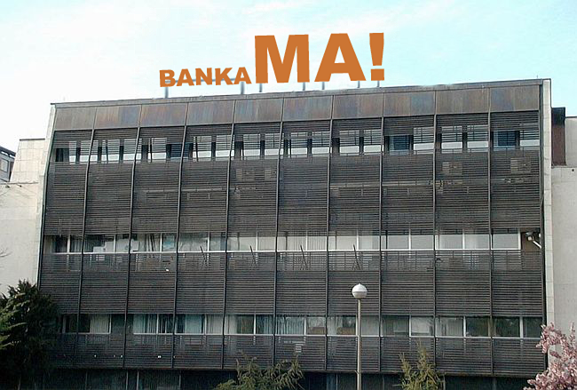

Banka Ma! je moderna, univerzalna banka fokusirana na poslovanje s građanima te malim i srednjim poduzetnicima kojima na raspolaganju stoji 15 poslovnica diljem Hrvatske. Banka raspolaže aktivom od 2,4 milijarde kuna uz visoku stopu adekvatnosti kapitala, 200 zaposlenih i oko 30.000 klijenata.
Prema poslovnim rezultatima, banka Ma! je među najbrže rastućim bankama u Hrvatskoj.
Fokus banke je na brzini i fleksibilnosti te potpunoj orijentiranosti na klijente. Banka nudi proizvode i usluge „po mjeri klijenta“, u najvećoj mogućoj mjeri prilagođene potrebama i željama svakog pojedinog klijenta, kako u segmentu poslovanja s građanstvom, tako i u segmentu poslovanja s malim i srednjim poduzetništvom.
U fokus stavljamo osnovne bankarske proizvode koji klijentima pružaju veću vrijednost. Radije radimo manje stvari, ali ih onda radimo odlično, nego puno stvari prosječno.
Učinkoviti smo i usmjereni na Vaše potrebe. Svu našu energiju usmjeravamo na uklanjanje složenosti i koncentrirani smo na isporuku onoga što je klijentu važno. Želimo da Vaše iskustvo u poslovanju s nama bude što pozitivnije.
Poslovanje banke Ma! vodi Uprava, koju čine predsjednici uprave Josip Lukin i Paolo Kos. Uprava donosi i provodi zacrtane poslovne ciljeve i strategiju, dok Nadzorni odbor aktivno prati rad Uprave i sudjeluje u operativnim odlukama o strategiji poslovanja.
Podružnice se nalaze u Zagrebu, Splitu, Rijeci, Osijeku, Zadru i Dubrovniku, a klijentima smo dostupni i putem široko razgranatih poslovnica diljem Hrvatske.
Komuniciramo jednostavno i izravno. Naši proizvodi i usluge su jasni i razumljivi. To našim klijentima donosi konkretne prednosti: kvalitetu umjesto kvantitete, lakše donošenje financijskih odluka, pouzdanu uslugu i predanu banku na svojoj strani.
To je ono za što se mi u Ma! banci zalažemo i što od nas možete očekivati. Dobro došli u svijet jasnog, jednostavnog i izravnog bankarstva!
